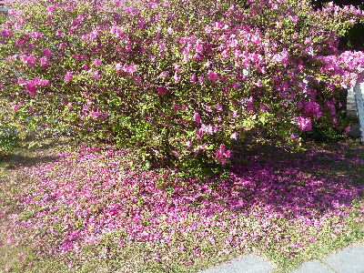
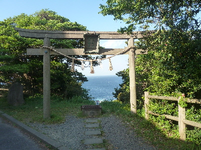

美保関灯台に鳥居があるんですね。
2018/05/03
駐車場からみた灯台です。
低い灯台ですね。

ここは風が強いので、終わった花が下に落ちていました。
ツツジの花って枯れると茶色くなったまま木に残って汚い感じがするんですが、これは下に落ちていいですね。
ヒンクの状態で落ちるので、落ちた花も綺麗でした。

海に向かって鳥居がありました。
沖の御前と地の御前という島があり、えびす様が釣りをしていた場所だそうです。
釣りをする人にはとってもご利益がありそうな場所ですね。
しばらく釣りをしていないので、これきっかけで釣りにいこうかなと思いました。